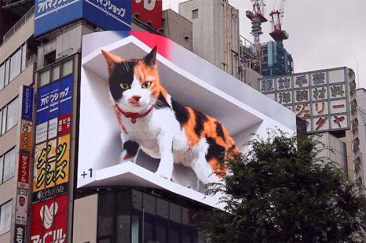

インターネット上で最も完全な日本語テキストジェネレーターへようこそ！クラシックな全幅のVaporwave/Aestheticスタイルと、3つの異なる追加のシックなテキストスタイルを含む、
6つの異なる日本語スタイルのテキストフォントを生成します。これらのフォントをコピーして、ソーシャルメディアの投稿や経歴などに貼り付けることができます。その美的感覚を得るために、
または単に楽しみのために。
これらの和字はUnicode標準に由来します。 1980年代にまとめられ、現在では100,000を超えるさまざまなシンボルが含まれています。そのため、キーボードに表示される文字よりも多くのテキスト文字があります。
もちろん、他の言語にも文字が必要です。Unicodeは国際的な組織であるため、テキストエンコーディングルールセットを使用してすべての人に対応したいと考えていました。